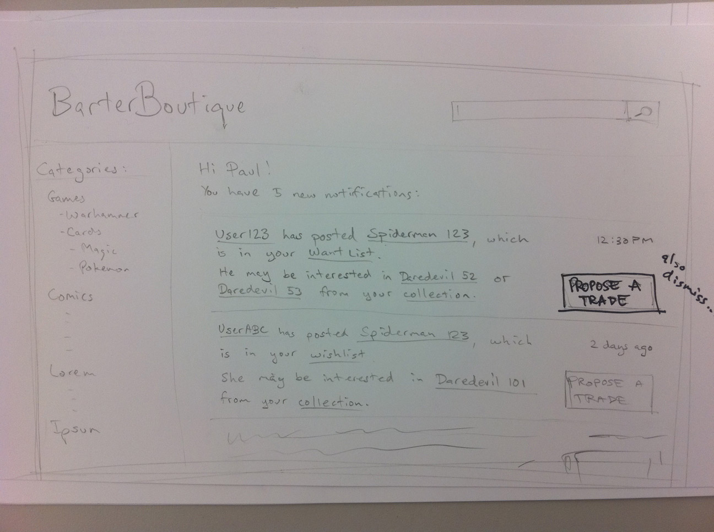
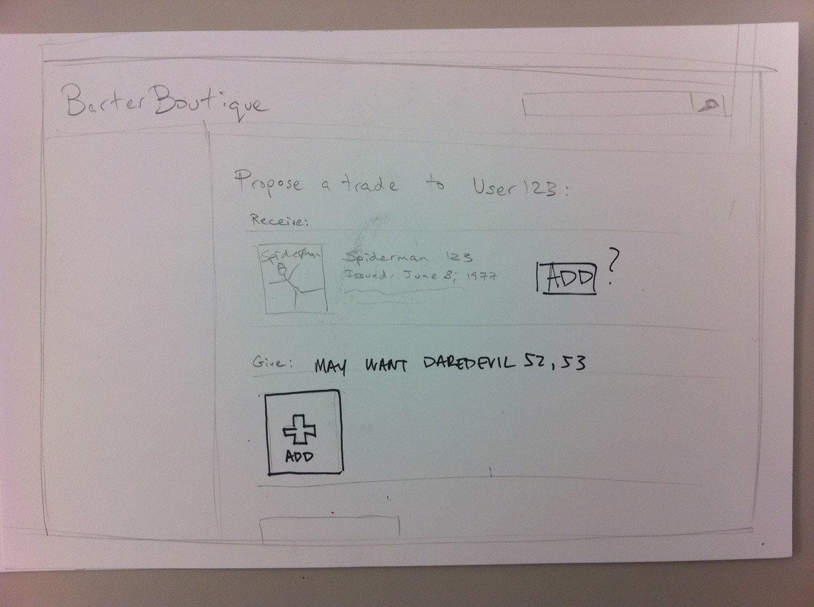
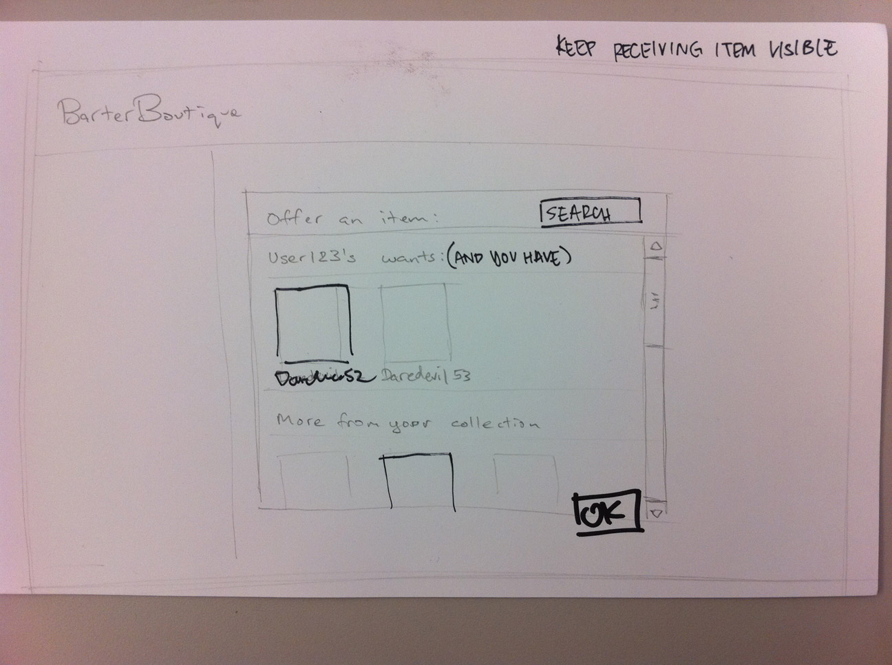
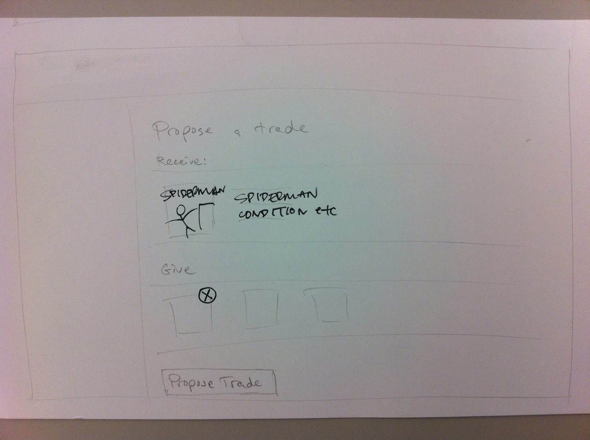

Design
Wireframes
We went through several phases of wireframing over the course of the project, in concert with scenario revisions, new research, and feedback from classmates and course staff.
As we continued to discuss user research, several pieces of core functionality emerged. During ideation, we talked about what core functionality should be included at the infancy of Barter Boutique. To better communicate our ideas to each other and come up with a visual basis for our design, we created a series of wireframes based on our discussions of what was essential. We knew the trading transaction would be essential to the design. First, how would users begin a transaction? They could start from suggestions and notifications on their homepage...
or they could begin a trading transaction from the search results page, which would show a list of users who have the searched item in their inventory.


Trading would then begin. Here are initial sketches of what that transaction page would look like:
  These initial sketches illustrate the bulk of our idea. Additional conversations followed about possibly sketching out what the profile would look like, how items would be added to users' inventories, and how a "chain" would be visualized. Ultimately, we decided not to build the profile page or "add an item" page. The "create a profile" page would have included a good amount of elements that are already present in other sites (e.g. username, interests, age, etc). To add an item, we decided to allow users to do so by browsing to the item. We did, however, conclude that the chain visualization would be interesting enough to include in the website. A mocking up of such an idea was then carried out.

From our scenario, we created a narrative between these wireframes. We used a giant whiteboard and lots of magnets (good for moving pieces around). This part of the process was key in developing our final demo. With the bulk of the wireframes created, we had an easier time visualizing what the interaction would look like. By putting them on the whiteboard, we were able to easily visualize the scenarios we had come up with. We drew flow arrows between wireframes to indicate what actions would take users to which wireframes.